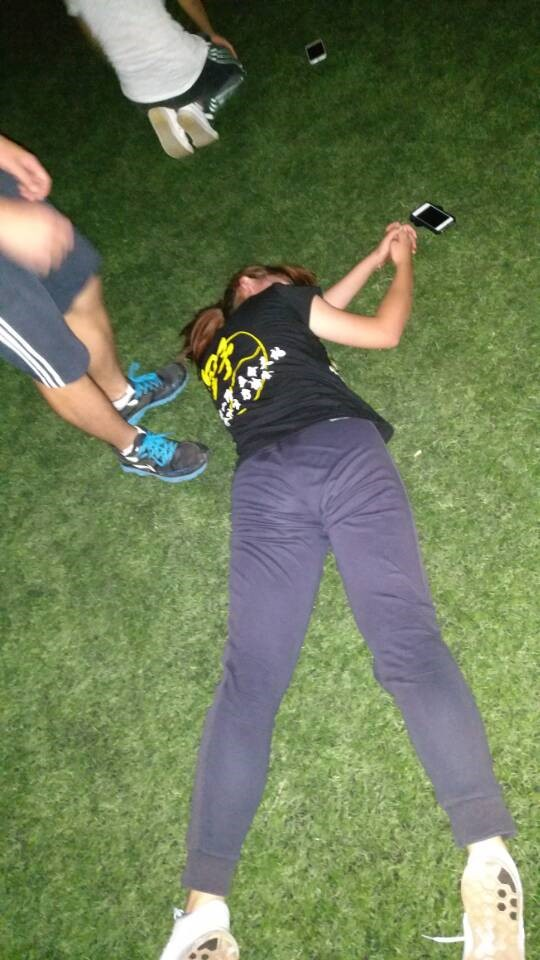
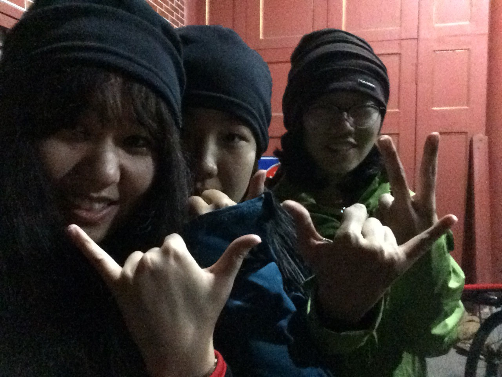
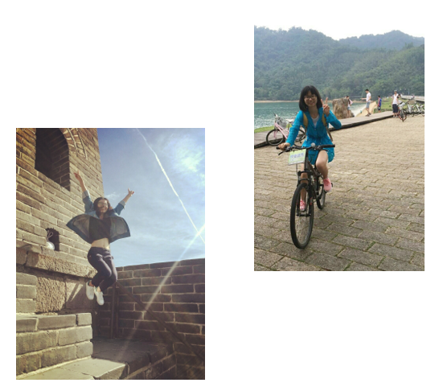

发信人: lvganyu (小雨儿), 信区: outdoor
标 题: 【团爆】后勤部！
发信站: 饮水思源 (2016年12月23日16:11:40 星期五)
部长：孟晗
孟晗（喜欢被人叫孟大哥）
一个沉迷画图无法自拔的大二园林狗
一直觉得自己不是很符合野协帅气霸道（？）的画风
但是却无厘头的爱这个协会和这里的人
仿佛呆了很久
感觉自己会一直呆下去（迷）
我进野协之前是这个画风（反正自己是相信的）
screen.width - 200){this.width = screen.width - 200}">
进了野协之后（不是穿着会衫自黑 是真的平板支撑做不下去了2333）
 screen.width - 200){this.width = screen.width - 200}">
哈~还是不开玩笑了，简单介绍一下我和野协的缘分
似乎是被培根吸引
稀里糊涂的加了协会
稀里糊涂的出了新干事线（三尖）
感觉此处要有配图
（为什么放这张照片呢 因为我觉得这张里的我好看 嗨呀找不到我的人不要讲话）
screen.width - 200){this.width = screen.width - 200}">
当时的我真是辣鸡居然真的带了压缩饼干上山 吃饭的时候看着大家腐败我一脸懵逼 这让
我养成了喜欢上山腐败的坏（hao）习惯
在三尖学到了很多登山知识 更为重要的是收获了友谊
这是我们组的合照
大屁股（左一）嘛当上了一个神奇的龙舟队长我还成了龙舟队员2333
阿彬组长老乡学姐都是超级nice的人
给我留下了深刻的印象（尤其是晚餐hhhhhh）
screen.width - 200){this.width = screen.width - 200}">
之后又出了龙须山，金紫尖，观音尖（探路）以及清凉峰这几条线。
这张图是我龙须山掉鞋的留念（geng）懂的人看看就好 不懂的话可以问我（黑脸）
screen.width - 200){this.width = screen.width - 200}">
这张是某一次（大概是龙须山吧）出线我和西西雨荷的合照，超级爱她们，这段友谊真的
是在野协最大的收获之一。（她们也爱我 我们相亲相爱2333）
 screen.width - 200){this.width = screen.width - 200}">
这是观音尖探路
不太懂为什么在这里照相
人人都会老 人人都尊老？黑人问号
听说是新登山队长提议的
那不敢说话（惶恐）
那次的自己挫挫的不想多说什么哼
screen.width - 200){this.width = screen.width - 200}">
这是金紫尖我和副领队的合影
记得那次的副领似乎是孙东晓（2333）
screen.width - 200){this.width = screen.width - 200}">
去清凉峰当副领真真上了贼船
连队记（赵佳伟）都敢欺负我
不过有西西有雨荷
能把整条线气氛带好我觉得我还是蛮不错的（自满的得意脸）
这是靠谱的领队组合照
screen.width - 200){this.width = screen.width - 200}">
以上是我出线的经历
目前我是野协后勤部长 定向副队长
说起定向副队长真是不开心
队长对我不好
在推送里放我黑照还说挺好看的（？）
还有啊 我拒绝被撩 就是任性
screen.width - 200){this.width = screen.width - 200}">
嗨呀 团爆嘛爆了这么多黑照 那也不差最后一张了
副会长让我搬锅我不敢不从2333
screen.width - 200){this.width = screen.width - 200}">
嗨呀 最后一句啦 看到这个团爆的人 你们开心吗？做人嘛 开心就好。
副部长：张冰宇
screen.width - 200){this.width = screen.width - 200}">
嗨！我是来自数学科学学院的张冰宇，从一个拥有很多很多海鲜的仙岛来——浙江象山！
喜欢美食，也因此开始喜欢运动，却独以平板支撑和仰卧起坐见长；
沉迷音乐，爱玩乐器们，钢琴吉他架子鼓古筝把自己摆得无处可逃；
带着近乎疯狂的理性外壳而有着文艺至极的心，可以来找我帮忙写情书呀；
热衷骑行，热爱定向，也许你在日月潭长城交大定向以及上海的城市定向走过我走过的路
。
 screen.width - 200){this.width = screen.width - 200}">
说起来，与野协的相识缘于pyh大神的倾情推荐；在愉快地玩耍过攀岩、扁带、帐篷以及食
物过后，这个充满热血的集体具有的强大吸引力便不容我离开了。我不敢说训练都是愉悦
身心的，但每一次训练带给我的，是一往不变的坚持和果敢。希望可以在这里遇见崭新的
你们，哪怕生活再艰难，ddl有多赶，也要像下面这只壁虎一样，来跑个步吧，没有什么是
运动不能解决的，如果有，那不停地运动一定可以解决！
screen.width - 200){this.width = screen.width - 200}">
screen.width - 200){this.width = screen.width - 200}">
副部长：李宾锐 （偷偷放了一张黑照）
电院大二，正式登山一年多，走过干事会员线若干，参加过观音尖探路，武功山小队伍线
领队，参加过太白小队伍线，户外经验较为丰富。性格开朗，爱好广泛，立志于去更远的
地方，登更高的山峰，
screen.width - 200){this.width = screen.width - 200}">
看更美的风景。
--
( ・ˍ・) (・ˍ・*)
※ 来源:·饮水思源 bbs.sjtu.edu.cn·[FROM: 59.78.32.54]
|